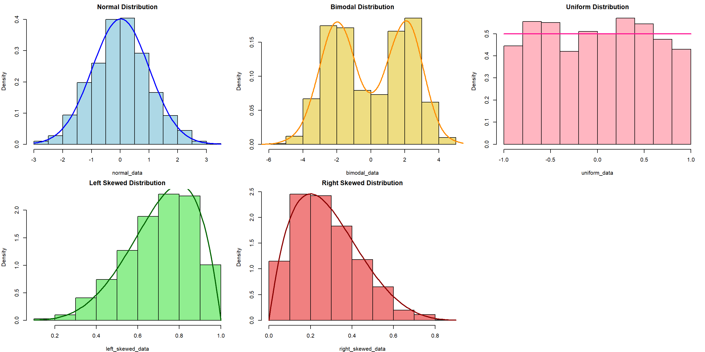
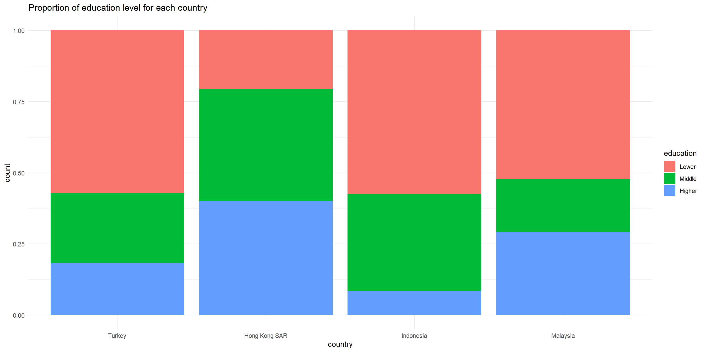
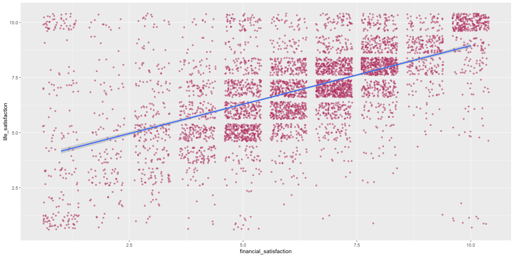
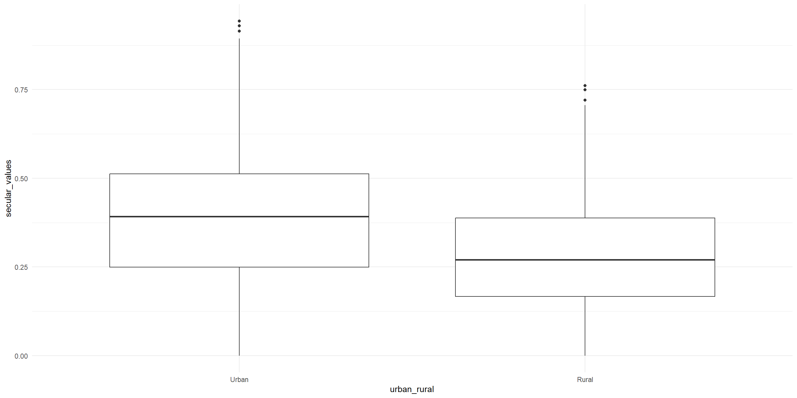
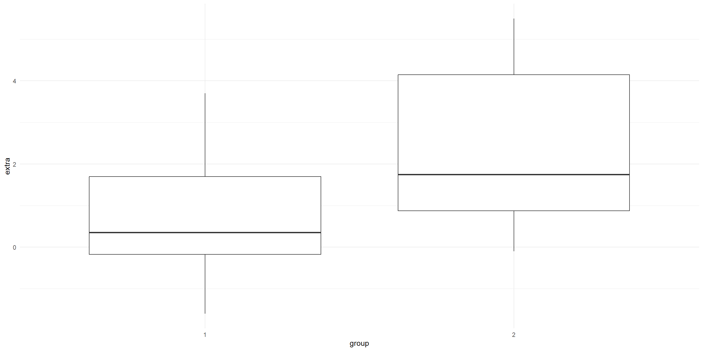
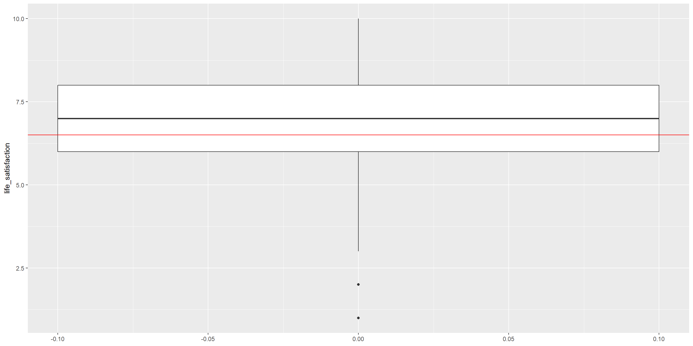
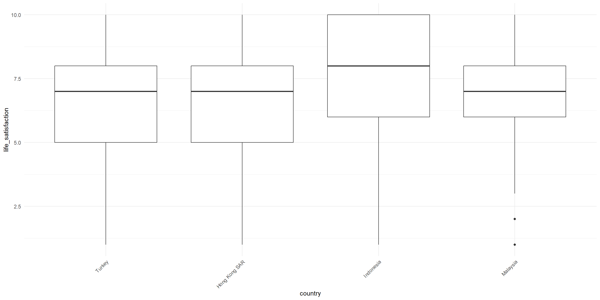
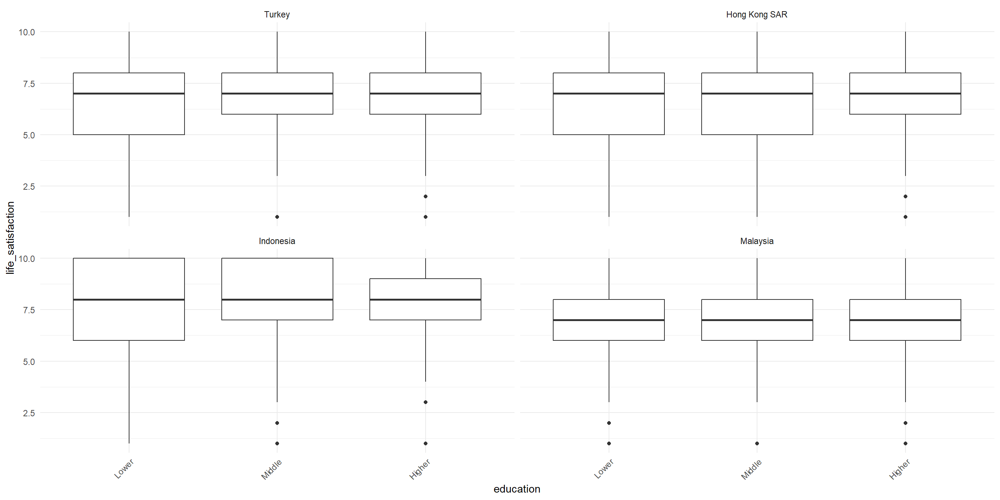
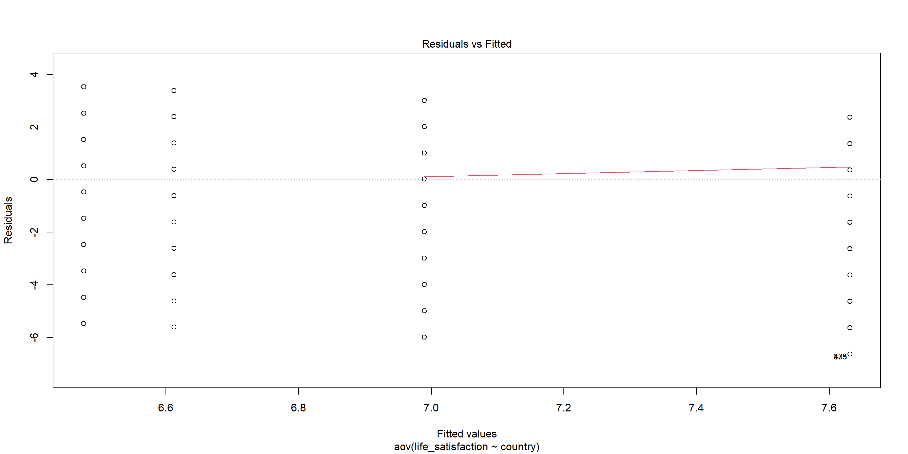

# import tidyverse library
library(tidyverse)
# read the CSV with WVS data
wvs_cleaned <- read_csv("data-output/wvs_cleaned_v1.csv")
# Convert categorical variables to factors
columns_to_convert <- c("country", "sex", "marital_status", "urban_rural", "income_level", "education", "trust_people")
wvs_cleaned <- wvs_cleaned |>
mutate(across(all_of(columns_to_convert), as_factor))
# peek at the data, pay attention to the data types!
glimpse(wvs_cleaned)Basic Inferential Stats in R: Correlation, T-Tests, and ANOVA
Bella Ratmelia
Today’s Outline
- Refreshers on data distribution and research variables
- Both categorical: chi-square
- Both continuous: correlations
- Categorical X and Continuous Y (comparing means): T-tests and ANOVA
Refresher: Data Distribution
The choice of appropriate statistical tests and methods often depends on the distribution of the data. Understanding the distribution helps in selecting the right and validity of the tests.

Refresher: Research Variables
Dependent Variable (DV)
The variables that will be affected as a result of manipulation/changes in the IVs
- Other names for it: Outcome, Response, Output, etc.
- Often denoted as \(y\)
Independent Variable (IV)
The variables that researchers will manipulate.
- Other names for it: Predictor, Covariate, Treatment, Regressor, Input, etc.
- Often denoted as \(x\)
Open your project - the (possibly) easier way
Go to the folder where you put your project for this workshop
Find a file with
.Rprojextension - this is the R project file that holds all the information about your project.Double click on the file. Rstudio should launch with your project loaded! This should be easier to ensure that you are loading the correct project when opening Rstudio.
Load our data for today!
Let’s create a new R script called session-4.R, and then copy the code below to load our data for today. This code uses read_csv from readr package (part of tidyverse) to load our cleaned CSV (from the first checkpoint)
Both Categorical variables - The \(X^2\) test
Chi-square test of independence
The \(X^2\) test of independence evaluates whether there is a statistically significant relationship between two categorical variables.
This is done by analyzing the frequency table (i.e., contingency table) formed by two categorical variables.
Example: Is there a relationship between education level and country in our WVS data?
Typically, we can start with the contigency table first, and then the visualization
Chi-square test of independence - visualizing data
We can use percent-stacked barchart to visualize this (remember from last week!)

Chi-Square: Sample problem and results
Is there a relationship between education level and country?
Pearson's Chi-squared test
data: table(wvs_cleaned$education, wvs_cleaned$country)
X-squared = 664.69, df = 6, p-value < 2.2e-16- X-squared = the coefficient
- df = degree of freedom
- p-value = the probability of getting more extreme results than what was observed. Generally, if this value is less than the pre-determined significance level (also called alpha), the result would be considered “statistically significant”
What if there is a hypothesis? How would you write this in the report?
Both Continuous variables - Correlation
Correlation
A correlation test evaluates the strength and direction of a linear relationship between two variables. The coefficient is expressed in value between -1 to 1, with 0 being no correlation at all.
Pearson’s \(r\) (r)
- Measure the association between two continuous numerical variables
- Sensitive to outliers
- Assumes normality and/or linearity
- (most likely the one that you learned in class)
Kendall’s \(\tau\) (tau)
- Measure the association between two variables (ordinal-ordinal or ordinal-continuous)
- less sensitive/more robust to outliers
- non-parametric, does not assume normality and/or linearity
Spearman’s \(\rho\) (rho)
- Measure the association between two variables (ordinal-ordinal or ordinal-continuous)
- less sensitive/more robust to outliers
- non-parametric, does not assume normality and/or linearity
For more info, you can refer to this reading: Measures of Association - How to Choose? (Harry Khamis, PhD)
Correlation: Sample problem and result
RQ: Is there a significant correlation between life satisfaction and financial satisfaction?
As both variables are numerical and continuous, we can use pearson correlation.
Let’s start with visualizing the data, which can be used to support the explanation.
Correlation: Sample problem and result

Conduct the correlation test
Pearson's product-moment correlation
data: wvs_cleaned$life_satisfaction and wvs_cleaned$financial_satisfaction
t = 50.024, df = 5100, p-value < 2.2e-16
alternative hypothesis: true correlation is not equal to 0
95 percent confidence interval:
0.555019 0.591845
sample estimates:
cor
0.5737219 - cor is the correlation coefficient - this is the number that you want to report.
- t is the t-test statistic
- df is the degrees of freedom
- p-value is the significance level of the t-test
- conf.int is the confidence interval of the coefficient at 95%
- sample estimates is the correlation coefficient
Learning Check #1
Is there a relationship between education level and age group? What do you think based on this result?
Comparing Means Between Groups - T-Tests and ANOVA
T-Tests
A t-test is a statistical test used to compare the means of two groups/samples of continuous data type and determine if the differences are statistically significant.
- The Student’s t-test is widely used when the sample size is reasonably small (less than approximately 30) or when the population standard deviation is unknown.
3 types of t-test
Two-samples / Independent Samples T-test
Used to compare the means of two independent groups (such as between-subjects research) to determine if they are significantly different.
Examples: Men vs Women group, Placebo vs Actual drugs.
Paired Samples T-Test
Used to compare the means of two related groups, such as repeated measurements on the same subjects (within-subjects research).
Examples: Before workshop vs After workshop.
One-sample T-test
Test if a specific sample mean (X̄) is statistically different from a known or hypothesized population mean (μ or mu)
T-Test: Independent Samples T-Test
RQ: Is there a significant difference in life satisfaction between males and females?
Let’s first take only the necessary columns and get some summary statistics, particularly on the number of samples for each group, as well as the mean, standard deviation, and variance.
# A tibble: 2 × 5
sex total mean variance stdeviation
<fct> <int> <dbl> <dbl> <dbl>
1 Male 2431 6.82 4.14 2.03
2 Female 2671 7.04 3.97 1.99Visualize the differences between two samples
The variance will be easier to see when we visualize it as well. As we can see, the variance for both groups are about the same. This suggests that the variance might be homoegeneous.

Conduct the independent samples T-test
Remember, the hypotheses are:
\(H_0\): There is no significant difference in the mean life satisfaction between male and female participant.
\(H_1\): There is a significant difference in the mean life satisfaction between male and female participant.
Welch Two Sample t-test
data: life_satisfaction by sex
t = -3.8972, df = 5033.4, p-value = 9.857e-05
alternative hypothesis: true difference in means between group Male and group Female is not equal to 0
95 percent confidence interval:
-0.3307951 -0.1093745
sample estimates:
mean in group Male mean in group Female
6.821473 7.041557 Notice that we are using Welch’s t-test instead of Students’ t-test
Welch’s t-test (also known as unequal variances t-test, is a more robust alternative to Student’s t-test. It is often used when two samples have unequal variances and possibly unequal sample sizes.
T-Test: Paired Sample T-Test
Unfortunately, our data is not suitable for paired T-Test. For demo purposes, we are going to use a built-in sample datasets called sleep from the base R dataset.
The dataset is already loaded, so you can use it right away!
- type
View(sleep)in your R console (bottom left), and then press enter. RStudio will open up the preview of the dataset. - type
?sleepin your R console to view the help page (a.k.a vignette) about this dataset. - type
data()in your console to see what are the available datasets that you can use for practice!
T-Test: Paired Sample T-Test
# A tibble: 20 × 3
extra group ID
<dbl> <fct> <fct>
1 0.7 1 1
2 -1.6 1 2
3 -0.2 1 3
4 -1.2 1 4
5 -0.1 1 5
6 3.4 1 6
7 3.7 1 7
8 0.8 1 8
9 0 1 9
10 2 1 10
11 1.9 2 1
12 0.8 2 2
13 1.1 2 3
14 0.1 2 4
15 -0.1 2 5
16 4.4 2 6
17 5.5 2 7
18 1.6 2 8
19 4.6 2 9
20 3.4 2 10 Visualise the before (group 1) and after (group 2)
# A tibble: 2 × 5
group n mean sd variance
<fct> <int> <dbl> <dbl> <dbl>
1 1 10 0.75 1.79 3.20
2 2 10 2.33 2.00 4.01Visualization:
Visualise the before (group 1) and after (group 2)

Transform the data shape
The data is in long format. let’s transform it into wide format so that we can conduct the analysis more easily.
# A tibble: 10 × 3
ID group_1 group_2
<fct> <dbl> <dbl>
1 1 0.7 1.9
2 2 -1.6 0.8
3 3 -0.2 1.1
4 4 -1.2 0.1
5 5 -0.1 -0.1
6 6 3.4 4.4
7 7 3.7 5.5
8 8 0.8 1.6
9 9 0 4.6
10 10 2 3.4Conduct the paired-sample T-test
Remember, the hypotheses are:
\(H_0\): There is no significant difference in the increase in hours of sleep.
\(H_1\): There is a significant difference in the increase in hours of sleep.
Paired t-test
data: Pair(sleep_wide$group_1, sleep_wide$group_2)
t = -4.0621, df = 9, p-value = 0.002833
alternative hypothesis: true mean difference is not equal to 0
95 percent confidence interval:
-2.4598858 -0.7001142
sample estimates:
mean difference
-1.58 T-test: One-sample T-Test
RQ: Is the average life satisfaction in our sample significantly different from the global average of 6.5?
Let’s start with visualizing the data

Conduct the One-sample T-Test
One Sample t-test
data: wvs_cleaned$life_satisfaction
t = 15.476, df = 5101, p-value < 2.2e-16
alternative hypothesis: true mean is not equal to 6.5
95 percent confidence interval:
6.881375 6.992008
sample estimates:
mean of x
6.936691 Learning Check #2
Look at the following data from CO2, which T-test to use if we want to compare difference in the carbon dioxide uptake between the two treatments?
Plant Type Treatment conc uptake
Qn1 : 7 Quebec :42 nonchilled:42 Min. : 95 Min. : 7.70
Qn2 : 7 Mississippi:42 chilled :42 1st Qu.: 175 1st Qu.:17.90
Qn3 : 7 Median : 350 Median :28.30
Qc1 : 7 Mean : 435 Mean :27.21
Qc3 : 7 3rd Qu.: 675 3rd Qu.:37.12
Qc2 : 7 Max. :1000 Max. :45.50
(Other):42 Visualize the data:
Grouped Data: uptake ~ conc | Plant
Plant Type Treatment conc uptake
1 Qn1 Quebec nonchilled 95 16.0
2 Qn1 Quebec nonchilled 175 30.4
3 Qn1 Quebec nonchilled 250 34.8
4 Qn1 Quebec nonchilled 350 37.2
5 Qn1 Quebec nonchilled 500 35.3
6 Qn1 Quebec nonchilled 675 39.2
7 Qn1 Quebec nonchilled 1000 39.7
8 Qn2 Quebec nonchilled 95 13.6
9 Qn2 Quebec nonchilled 175 27.3
10 Qn2 Quebec nonchilled 250 37.1
11 Qn2 Quebec nonchilled 350 41.8
12 Qn2 Quebec nonchilled 500 40.6
13 Qn2 Quebec nonchilled 675 41.4
14 Qn2 Quebec nonchilled 1000 44.3
15 Qn3 Quebec nonchilled 95 16.2
16 Qn3 Quebec nonchilled 175 32.4
17 Qn3 Quebec nonchilled 250 40.3
18 Qn3 Quebec nonchilled 350 42.1
19 Qn3 Quebec nonchilled 500 42.9
20 Qn3 Quebec nonchilled 675 43.9
21 Qn3 Quebec nonchilled 1000 45.5
22 Qc1 Quebec chilled 95 14.2
23 Qc1 Quebec chilled 175 24.1
24 Qc1 Quebec chilled 250 30.3
25 Qc1 Quebec chilled 350 34.6
26 Qc1 Quebec chilled 500 32.5
27 Qc1 Quebec chilled 675 35.4
28 Qc1 Quebec chilled 1000 38.7
29 Qc2 Quebec chilled 95 9.3
30 Qc2 Quebec chilled 175 27.3
31 Qc2 Quebec chilled 250 35.0
32 Qc2 Quebec chilled 350 38.8
33 Qc2 Quebec chilled 500 38.6
34 Qc2 Quebec chilled 675 37.5
35 Qc2 Quebec chilled 1000 42.4
36 Qc3 Quebec chilled 95 15.1
37 Qc3 Quebec chilled 175 21.0
38 Qc3 Quebec chilled 250 38.1
39 Qc3 Quebec chilled 350 34.0
40 Qc3 Quebec chilled 500 38.9
41 Qc3 Quebec chilled 675 39.6
42 Qc3 Quebec chilled 1000 41.4
43 Mn1 Mississippi nonchilled 95 10.6
44 Mn1 Mississippi nonchilled 175 19.2
45 Mn1 Mississippi nonchilled 250 26.2
46 Mn1 Mississippi nonchilled 350 30.0
47 Mn1 Mississippi nonchilled 500 30.9
48 Mn1 Mississippi nonchilled 675 32.4
49 Mn1 Mississippi nonchilled 1000 35.5
50 Mn2 Mississippi nonchilled 95 12.0
51 Mn2 Mississippi nonchilled 175 22.0
52 Mn2 Mississippi nonchilled 250 30.6
53 Mn2 Mississippi nonchilled 350 31.8
54 Mn2 Mississippi nonchilled 500 32.4
55 Mn2 Mississippi nonchilled 675 31.1
56 Mn2 Mississippi nonchilled 1000 31.5
57 Mn3 Mississippi nonchilled 95 11.3
58 Mn3 Mississippi nonchilled 175 19.4
59 Mn3 Mississippi nonchilled 250 25.8
60 Mn3 Mississippi nonchilled 350 27.9
61 Mn3 Mississippi nonchilled 500 28.5
62 Mn3 Mississippi nonchilled 675 28.1
63 Mn3 Mississippi nonchilled 1000 27.8
64 Mc1 Mississippi chilled 95 10.5
65 Mc1 Mississippi chilled 175 14.9
66 Mc1 Mississippi chilled 250 18.1
67 Mc1 Mississippi chilled 350 18.9
68 Mc1 Mississippi chilled 500 19.5
69 Mc1 Mississippi chilled 675 22.2
70 Mc1 Mississippi chilled 1000 21.9
71 Mc2 Mississippi chilled 95 7.7
72 Mc2 Mississippi chilled 175 11.4
73 Mc2 Mississippi chilled 250 12.3
74 Mc2 Mississippi chilled 350 13.0
75 Mc2 Mississippi chilled 500 12.5
76 Mc2 Mississippi chilled 675 13.7
77 Mc2 Mississippi chilled 1000 14.4
78 Mc3 Mississippi chilled 95 10.6
79 Mc3 Mississippi chilled 175 18.0
80 Mc3 Mississippi chilled 250 17.9
81 Mc3 Mississippi chilled 350 17.9
82 Mc3 Mississippi chilled 500 17.9
83 Mc3 Mississippi chilled 675 18.9
84 Mc3 Mississippi chilled 1000 19.9ANOVA (Analysis of Variance)
ANOVA (Analysis of Variance) is a statistical test used to compare the means of three or more groups or samples and determine if the differences are statistically significant.
There are two ‘mainstream’ ANOVA:
- One-Way ANOVA: comparing means across two or more independent groups (levels) of a single independent variable.
- Two-Way ANOVA: comparing means across two or more independent groups (levels) of two independent variable. ()
- Other types of ANOVA that you may encounter: Repeated measures ANOVA, Multivariate ANOVA (MANOVA), ANCOVA, etc.
One-Way ANOVA: Sample problem and result
RQ: Is there a significant difference in life satisfaction between different country?
Let’s visualize the data first!
One-Way ANOVA: Sample problem and result

Conduct the one-way Anova test
Df Sum Sq Mean Sq F value Pr(>F)
country 3 1023 340.9 88.22 <2e-16 ***
Residuals 5098 19698 3.9
---
Signif. codes: 0 '***' 0.001 '**' 0.01 '*' 0.05 '.' 0.1 ' ' 1- F-value: the coefficient value
- Pr(>F): the p-value
- Sum Sq: Sum of Squares
- Mean Sq : Mean Squares
- Df: Degrees of Freedom
Post-hoc test (only when result is significant)
If your ANOVA test indicates significant result, the next step is to figure out which category pairings are yielding the significant result.
Tukey’s Honest Significant Difference (HSD) can help us figure that out!
Tukey multiple comparisons of means
95% family-wise confidence level
Fit: aov(formula = life_satisfaction ~ country, data = wvs_cleaned)
$country
diff lwr upr p adj
Hong Kong SAR-Turkey 0.1362701 -0.06632953 0.3388697 0.3088747
Indonesia-Turkey 1.1549017 0.95340875 1.3563947 0.0000000
Malaysia-Turkey 0.5131861 0.31213843 0.7142337 0.0000000
Indonesia-Hong Kong SAR 1.0186317 0.81944446 1.2178188 0.0000000
Malaysia-Hong Kong SAR 0.3769160 0.17817931 0.5756527 0.0000067
Malaysia-Indonesia -0.6417156 -0.83932409 -0.4441072 0.0000000ANOVA Assumptions
The Dependent variable should be a continuous variable
The Independent variable should be a categorical variable
The observations for Independent variable should be independent of each other
The Dependent Variable distribution should be approximately normal – even more crucial if sample size is small.
- You can verify this by visualizing your data in histogram, or use Shapiro-Wilk Test, among other things
The variance for each combination of groups should be approximately equal – also referred to as “homogeneity of variances” or homoskedasticity.
- One way to verify this is using Levene’s Test
No significant outliers
Two-Way ANOVA: Sample problem and result
RQ: Is there a significant difference in life satisfaction across education levels and countries?
Let’s visualize the data!
Two-Way ANOVA: Sample problem and result

Conduct the Two-way ANOVA test (Additive model)
Df Sum Sq Mean Sq F value Pr(>F)
education 2 30 15.2 3.941 0.0195 *
country 3 999 333.0 86.179 <2e-16 ***
Residuals 5096 19691 3.9
---
Signif. codes: 0 '***' 0.001 '**' 0.01 '*' 0.05 '.' 0.1 ' ' 1Post-hoc test for Two-way ANOVA
Tukey multiple comparisons of means
95% family-wise confidence level
Fit: aov(formula = life_satisfaction ~ education + country, data = wvs_cleaned)
$education
diff lwr upr p adj
Middle-Lower 0.03453673 -0.1177437 0.186817112 0.8557596
Higher-Lower -0.16434267 -0.3262096 -0.002475764 0.0456358
Higher-Middle -0.19887940 -0.3767369 -0.021021948 0.0238498
$country
diff lwr upr p adj
Hong Kong SAR-Turkey 0.1670468 -0.03555711 0.3696508 0.1471825
Indonesia-Turkey 1.1358031 0.93430579 1.3373004 0.0000000
Malaysia-Turkey 0.5330154 0.33196346 0.7340674 0.0000000
Indonesia-Hong Kong SAR 0.9687563 0.76956478 1.1679477 0.0000000
Malaysia-Hong Kong SAR 0.3659686 0.16722761 0.5647096 0.0000136
Malaysia-Indonesia -0.6027877 -0.80040037 -0.4051750 0.0000000Conduct the Two-way ANOVA test (with Interaction)
“With interaction” means we are testing whether the effect of one variable (education) on the outcome (life satisfaction) depends on the level of the other variable (country), or vice versa. For the R code, we use education * country instead of education + country
Df Sum Sq Mean Sq F value Pr(>F)
education 2 30 15.2 3.955 0.019209 *
country 3 999 333.0 86.487 < 2e-16 ***
education:country 6 93 15.6 4.039 0.000483 ***
Residuals 5090 19598 3.9
---
Signif. codes: 0 '***' 0.001 '**' 0.01 '*' 0.05 '.' 0.1 ' ' 1Interaction plot
To better see this effect, let’s plot the interaction.
wvs_cleaned |>
ggplot(aes(x = education, y = life_satisfaction,
group = country, color = country)) + # lines will be grouped and colored by country
stat_summary(fun = mean, geom = "point") + # Add points to show mean life_satisfaction for each education level by country
stat_summary(fun = mean, geom = "line") + # Connect the points with lines
theme_minimal()Interaction plot

Interpreting our interaction plot
Some observations that we can make:
- Look at whether the lines for each country run roughly parallel — if they do, there is little interaction between education and country.
- If the lines cross or diverge, this suggests the effect of education on life satisfaction differs across countries.
- Pay attention to which country shows the steepest slope — this indicates the strongest relationship between education level and life satisfaction in that country.
Recap
Data distribution, normal distribution and skewed distribution.
Use X2 test of independence, chisq.test(), to evaluate whether there is a statistically significant relationship between two categorical variables.
Use a correlation test, cor.test(), to evaluate the strength and direction of a linear relationship between two variables. The coefficient is expressed in value between -1 to 1, with 0 being no correlation at all.
Use t-test() to compare the means of two groups of continuous data and determine if the differences are statistically significant.
Three types of t-tests i.e., one-sample t-test, independent samples t-test, and paired samples t-test.
Use ANOVA (Analysis of Variance) to compare the means of three or more groups or samples and determine if the differences are statistically significant.
End of Session 4!
Next session: Linear and Logistic Regressions
Appendix
- Reporting with apaTables
- ANOVA assumptions
Reporting with apaTables
apaTables is a package that will generate APA-formatted report table for correlation, ANOVA, and regression. It has limited customisations and few varity of tables. The documentation online is for the “development” version which is not what we will get if we install normally with install.packages(), so we need to rely on the vignette more. View the documentation here
Example: get the correlation table for political_scale, life_satisfaction, and financial_satisfaction
Reporting with gtsummary
Another popular packages is gt (stands for “great tables”) and its ‘add-on’, gtsummary. It has lots of customizations (which can get overwhelming!) but fortunately the documentation is pretty good and there are plenty of code samples. View the documentation here
Example: get the mean differences table for political_scale, life_satisfaction, and financial_satisfaction, grouped by sex
Reporting with gtsummary
| Characteristic | Male N = 2,4311 |
Female N = 2,6711 |
Difference2 | 95% CI2 | p-value2 |
|---|---|---|---|---|---|
| life_satisfaction | 7.00 (6.00, 8.00) | 7.00 (6.00, 8.00) | -0.22 | -0.33, -0.11 | <0.001 |
| financial_satisfaction | 6.00 (5.00, 8.00) | 7.00 (5.00, 8.00) | -0.15 | -0.27, -0.03 | 0.014 |
| freedom_of_choice | 7.00 (6.00, 8.00) | 7.00 (6.00, 9.00) | -0.13 | -0.25, -0.01 | 0.033 |
| 1 Median (Q1, Q3) | |||||
| 2 Welch Two Sample t-test | |||||
| Abbreviation: CI = Confidence Interval | |||||
ANOVA Assumptions
The Dependent variable should be a continuous variable
The Independent variable should be a categorical variable
The observations for Independent variable should be independent of each other
The Dependent Variable distribution should be approximately normal – even more crucial if sample size is small.
- You can verify this by visualizing your data in histogram, or use Shapiro-Wilk Test, among other things
The variance for each combination of groups should be approximately equal – also referred to as “homogeneity of variances” or homoskedasticity.
- One way to verify this is using Levene’s Test
No significant outliers
Verifying the assumption: Test for Homogeneity of variance
Levene’s Test to test for homogeneity of variance i.e. homoskedasticity
Levene's Test for Homogeneity of Variance (center = median)
Df F value Pr(>F)
group 3 41.279 < 2.2e-16 ***
5098
---
Signif. codes: 0 '***' 0.001 '**' 0.01 '*' 0.05 '.' 0.1 ' ' 1The results indicate that the p-value is more than the significance level of 0.05, suggesting that there is NO significant difference in variance across the groups. Consequently, the assumption of homogeneity of variances is satisfied.
Plotting Residuals: Residual vs Fitted
When we plot the residuals1, we can see some outliers as well:

Verifying the assumptions: Test for Normality
Shapiro-Wilk Test to test for normality.
Shapiro-Wilk normality test
data: sample(residuals(satisfaction_country_anova), 5000)
W = 0.95637, p-value < 2.2e-16The p-value from the Shapiro-Wilk test is less than the significance level of 0.05, indicating that the data significantly deviates from normality. Therefore, the assumption of normality is NOT satisfied.
Plotting Residuals: Q-Q Plot
We can see this better from when we plot the residuals:

When the assumptions are not met…
We can use Kruskal-Wallis rank sum test as an non-parametric alternative to One-Way ANOVA!
Kruskal-Wallis rank sum test
data: life_satisfaction by country
Kruskal-Wallis chi-squared = 334.49, df = 3, p-value < 2.2e-16Other alternative: Welch’s ANOVA for when the homoskedasticity assumption is not met.
Exercise for Two-Way ANOVA
Is there a significant difference in freedom of choice between different age groups?
- Visualize the data as well
- Test for normality and homoskedasticity, and choose the appropriate test
TukeyHSD:
Tukey multiple comparisons of means
95% family-wise confidence level
Fit: aov(formula = freedom_of_choice ~ age_group, data = wvs_cleaned)
$age_group
diff lwr upr p adj
29-44-18-28 -0.008186981 -0.21087357 0.19449961 0.9995998
45-60-18-28 -0.170722366 -0.38100370 0.03955897 0.1576238
61+-18-28 0.019484044 -0.27334253 0.31231062 0.9982235
45-60-29-44 -0.162535385 -0.35112647 0.02605570 0.1193053
61+-29-44 0.027671025 -0.24999021 0.30533226 0.9941119
61+-45-60 0.190206410 -0.09304639 0.47345921 0.3103294